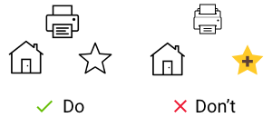

Your browser doesn't support the features required by impress.js, so you are presented with a simplified version of this presentation.
For the best experience please use the latest Chrome, Safari or Firefox browser.
Understanding UX
Presented by
Narendran S
What is UX?
The user experience (UX) is how a user interacts with and experiences a product, system or service
UX Goals
User Experience (UX) is the holistic journey users traverse as they use a product.
Not only does it include their direct interactions with the product, but also how it fits in with their overall task completion process.
7 UX Factors
The 7 Factors that Influence User Experience
1. Useful
User interface should provide the information or functionality that they need.
Content should be relatable to the user needs.
Example: Amazon review interface.
Users rate the reviews as helpful or unhelpful.
Amazon then ranks the reviews based on their helpfulness.
2. Usable
Usability refers to how effectively and efficiently and intuitively users can
reach the goal they are trying to achieve by using your product,
service, website, etc..
Example: Controllers for COD .
You can control Call of Duty using touch screen or Joy stick or Key board.
3. Findable
Content needs to be navigable and locatable
In your products, You should match the user's knowledge of
how they use the system
Example: Icons & Menu.
Users mostly click the hamburger icon for menu.
They expect the same behaviour from such icons like search, share, send, etc., as how they
works in other products.
4. Credible
The trust of the customers on your product or service is termed as
the credible factor of user experience.
You can add testimonials, portfolios or partner reference to
improve the credibility of your business
Example: Google
To visit a website, User can simply enter the url in the url bar.
However, most of the users prefer to google the site and then navigate to the site from google.
5. Accessible
Providing the ability to access the product/service from wide range of controls
Making the same access to all kind of people including physically challenged.
Example: Youtube search
A kid can play a song from youtube search with the audio ability provided by youtube.
6. Desirable
Desirabile factor refers to how much time users came back to the product/service
Desirability boosts the human emotions to hold onto a product and use it for a long time.
Example: Apple
They've designed a brand that has hard-core followers who wouldn't use a PC if it was offered to them for free.
7. Valuable
Valuable can be called as the 'Sum' of all the other factors.
This factor ensures that the product that you create must deliver value to the business and to the customer.
A product can provide value to different users in different ways. For some users, desirability can be more important than accessibility or vice versa.
Know the Rules Break the Rules
Know your audience
User research is a natural first step in the design process.
Most probable, the people who'll use your product have different backgrounds,
different mindsets, different mental models, and different goals.
In other words, they are not you.
Doherty Threshold
Provide system feedback within 400 ms in order to keep users' attention and increase productivity.
Animation is one way to visually engage people while loading or processing is happening in the background.
There should be minimal ui changes/touch response/sounds on user interactions.
Consistency
A design should always feel consistent with the internal elements
within the particular design.
Consistency could be achieved through Typhography, Colors, Graphics and Animations.

KISS [Keep it simple, stupid]
KISS, an acronym for keep it simple, stupid, is a design principle
plainly highlights that simple design works better than complicated design.
Everything should be made as simple as possible, but not simpler.
Hick's Law
The time it takes to make a decision increases with the number and complexity of choices.
Minimize choices when response times are critical to increase decision time.
Break complex tasks into smaller steps in order to decrease cognitive load.
Fitts's Law
Make sure the target action is always easily accessible to the user.
Touch targets should be large enough for users to accurately select them.
Touch targets should have ample spacing between them.
Apple recommends a minimum target size of 44x44 pixels.
Jakob's Law
Users spend most of their time on other sites.
This means that users prefer your site to work the same way as all the other sites they already know.
By leveraging existing mental models,
we can create superior user experiences in which the users can focus
on their tasks rather than on learning new models.